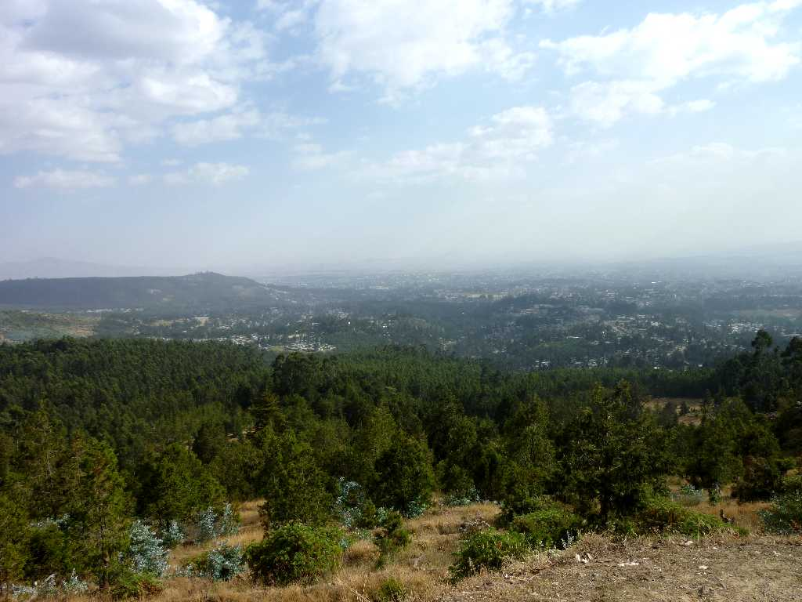
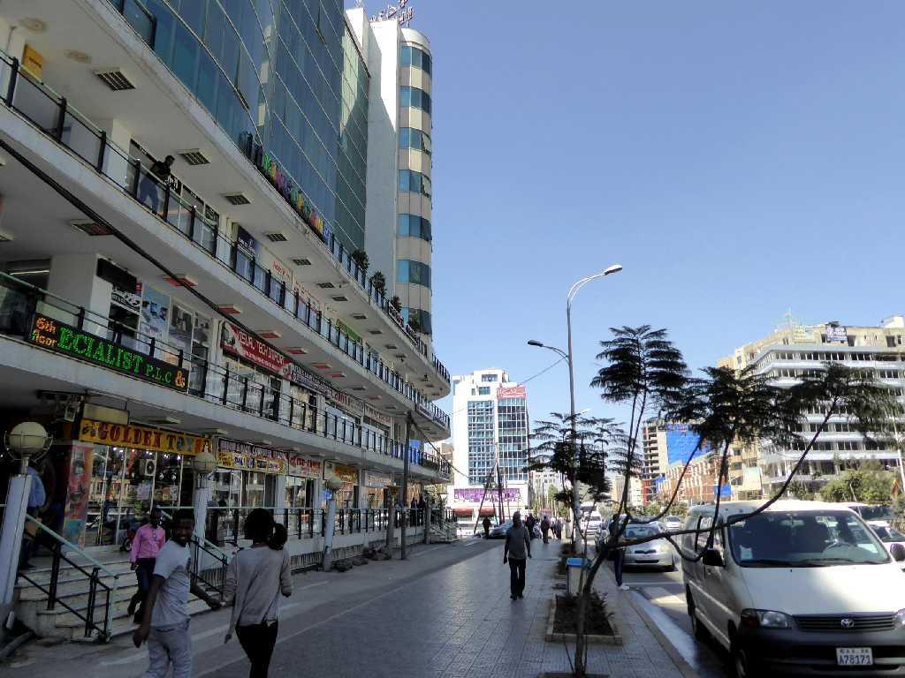
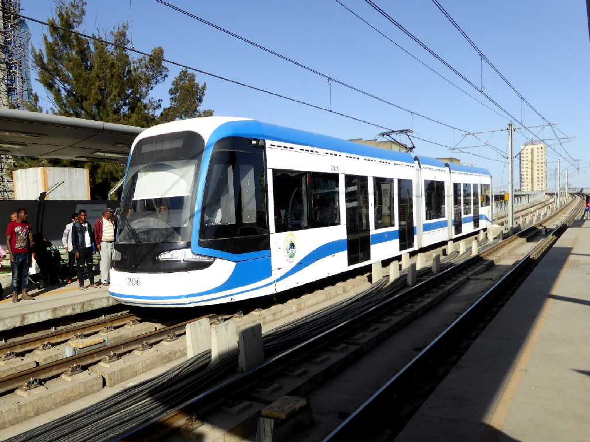
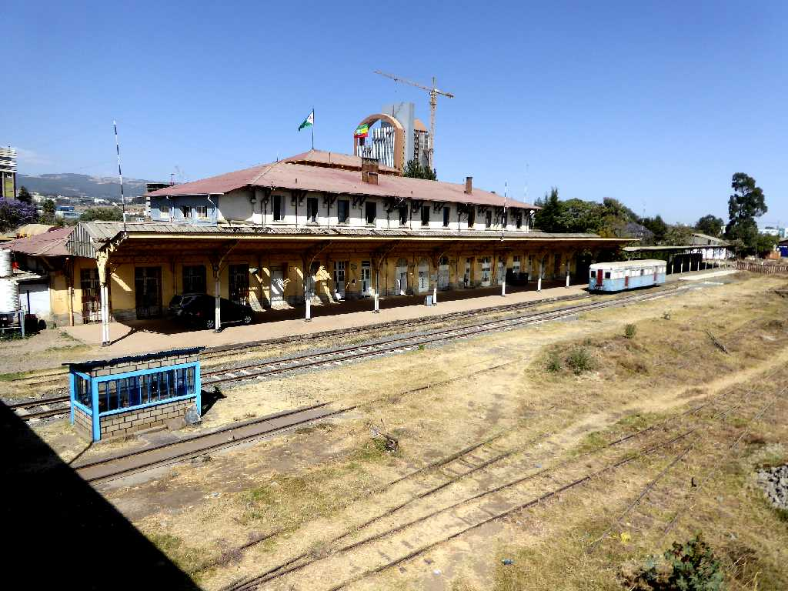

Addis Ababa from Entoto Hills
エントト山よりエチオピアの首都で２０世紀初頭に創られた新しい花を意味するアジスアベバの街並を望む
January 19 2010 Timkat Festival Addis Ababa
エチオピア時間は１２時間制を採っている 朝の６時を０時とし夕方の６時を１２時とする 従って正午は６時となり午後９時は夜３時と言う 現地の時計や時刻表は総て６時間ずれている
また暦もエチオピア独自のものでユリウス暦に同期するナイル河流域のコプト暦に近くナイル河が増水する９月１２日頃が正月となるため西暦より約７年９ヶ月遅れエチオピアの２０００年１月１日はグレゴリオ暦の２００７年９月１ ２日である

Africa Street Addis Ababa
アジスアベバは７年ぶりの再訪問

Light Rail
７年前には無かったアディスアベバの交通渋滞緩和に創られたライトレールに乗車

Ethiopia-Djibouti Railway Station
January 26 2017 Addis Ababa